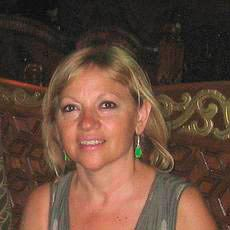
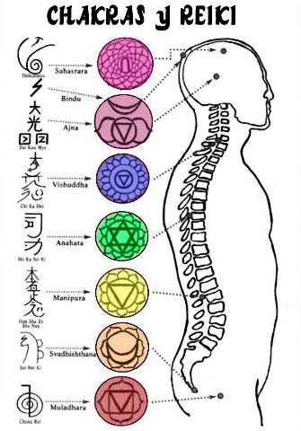
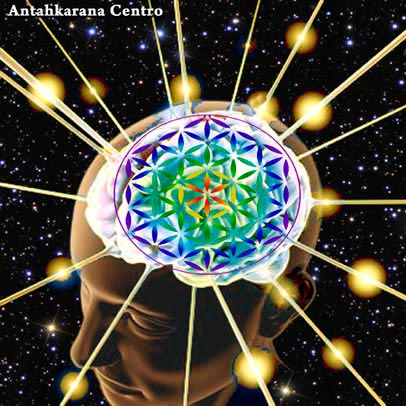

La terapeuta holística Amparo Vilanova procede con terapia que incluye Reiki, acupuntura, masaje y terapia de integración, reflexología, biodescodificación y piramidoterapia.
AMPARO VILANOVA - PSICOBIOTERAPEUTA - SANACIÓN HOLÍSTICA NATURAL
Maestra de Reiki, Acupuntura, Masaje - Terapia de integración liberación emocional - Facilitadora de meditaciones y talleres- VALENCIA - ESPAÑA - Tlf: 615 07 40 51
ACUPUNTURA
La Acupuntura es realmente efectiva y no sólo a nivel sintomático, sino a nivel etiológico. Tiene acción sobre el sistema inmunitario, hormonal, nervioso, sanguíneo, óseo-articular, sensitivo, emocional… Equilibra y restaura los ritmos internos, activando las funciones orgánicas y ralentizando otras, hasta poner cada cosa en su lugar mediante el fortalecimiento y equilibrio de la energía vital.
MASAJE
La diferencia entre los masajes de relajación y los masajes holísticos es que los masajes de relajación o relajantes únicamente se dirigen a la parte física, las técnicas utilizadas sirven para relajar los músculos aliviar contracturas, dolores musculares y en general ayuda a que la persona se relaje; los masajes terapéuticos van más allá de lo físico, ya que con ayuda de otras técnicas como aromaterapia, musicoterapia, Reiki, reflexología, digitopuntura, entre otras, se contacta con la parte emocional y con ayuda de la terapeuta se pueden encontrar las respuestas a los malestares debido a que atrás de cada dolor físico hay un patrón emocional y mental que lo provoca. Estos masajes no sólo ayudarán a que te relajes, también te ayudarán a buscar más profundamente los motivos de tu actual estado.
¿QUÉ ES EL REIKI?
* Desde la antigüedad, todas las culturas han coincidido en que existe una Energía Vital Universal que impregna y sustenta al cosmos en su totalidad, como una Unidad.
* Reiki es la sanación a través de la energía universal de la más alta vibración y que transmitimos a través de nuestras manos. Esta técnica está al alcance de todos, fácil de aprender y de aplicar.
* El Reiki armoniza y equilibra cuerpo, mente y espíritu.
* Equilibra tus centros energéticos, produciendo así la auto sanación.
* Produce un estado de profunda relajación y calma mental - emocional.
* Desde hace más de 20 años, se utiliza en los hospitales para ayudar a las personas que sufren dolor y ansiedad, entre otros.
* El Reiki llega mucho más allá del cuerpo físico y resulta eficaz en multitud de molestias y trastornos físicos y psicológicos, como la ansiedad, el estrés, el insomnio, la artritis, las jaquecas, los problemas gástricos, y también como sanador de bloqueos emocionales profundos.
* Los animales, plantas y alimentos también se beneficiaran de esta sanación.
* Induce a desarrollar el autoconocimiento y la expansión de conciencia.
* Nos ayuda a sanar viejas heridas en nuestra vida.
* Con las iniciaciones de Reiki se abren los canales de trasmisión de energía y eleva nuestra capacidad sanadora.
* La práctica habitual de Reiki eleva los niveles de conciencia, te conduce a la conexión original con tu Ser, primero con la salud física, luego con la paz mental y finalmente con la elevación de la conciencia espiritual, permitiéndote entrar en contacto con tu Guía y Maestro Interior.
LOS BENEFICIOS DEL REIKI
1.- Regula el sistema nervioso.
2.- Libera bloqueos emocionales.
3.- Te aporta energía vital. Equilibra todo el sistema energético.
4.- Abre el corazón en el sentido emocional más elevado.
5.- Te conecta contigo mism@. Te lleva a una paz profunda. Relaja tu mente.
6.- En el proceso de la sesión te ayuda a tomar conciencia. Restablece la alegría por la vida…
7.- Su método de meditación permite a la mente calmarse y descansar en niveles profundos de relajación. Cuando la mente se calma, suelta toda la tensión y el estrés, y se enfoca en el momento presente.
8.- Las meditaciones guiadas se corresponden muy bien con nuestro concepto occidental de estructura, aparte de que nos permite alcanzar metas concretas; nos ayuda a tomar conciencia de nuestras emociones o creencias limitantes y liberarnos de ellas.
Según una investigación, la meditación tiene efectos beneficiosos a muy corto plazo en el cerebro ya que ocho semanas de práctica son suficientes para generar cambios visibles en ciertas regiones relacionadas a la memoria, la auto-conciencia, la compasión y el stress.
A través de la meditación y la visualización guiada entramos en nuestro espacio interior, conectamos con nuestro maestro corazón, con nuestra sabiduría interna y en un espacio de paz y amor recobramos la armonía y la salud emocional-mental-física.
Todos los Jueves a las 19:30H te esperamos en Antahkarana. La aportación es voluntaria.
PIRAMIDOLOGÍA Y PIRAMIDOTERAPIA
Contamos con una nueva especialidad para todos vosotros. La piramidología es una alternativa médica de las más versátiles. No sabemos si corresponde a la tan buscada "Panacea", pero es lo que más se aproxima, por el espectro enorme de dolencias que se pueden tratar: Reumáticas y degenerativas en general, infecciosas, bacterianas, circulatorias y respiratorias. Es óptima para el uso en consultorio médico, en osteopatía, ortopedia, lumbalgia, tratamiento sin antibióticos de infecciones bacterianas localizadas. Una de las causas fundamentales del efecto piramidal es la reestructuración molecular de toda la materia -incluso de los microcristales minerales-, de la que derivan la ausencia de putrefacción, la mayor solvencia y menor poder oxidante del agua, así como la eliminación por barrido magnético de radicales libres y toda basurilla cuántica.
Está probado por el Consejo Científico del Centro Nacional de Medicina Natural y Tradicional CENAMENT el valor terapéutico y sus efectos: antiinflamatorio, analgésico, bacteriostático, miorelajante y sedante, entre otros.
Una esguince que es tratado con antipiramide, en 3 días está resuelto, en lugar de los 15 días habituales. Sin consumo de antiinflamatorios, etc.
CARACTERÍSTICAS Y USOS
La Pirámide Modelo HYGIA se utiliza para diversas terapias antirreumáticas, traumatológicas, infecciosas (especialmente bacterianas), aceleración de la regeneración celular en heridas externas e internas, contusiones, torceduras, esguinces y accidentes lumbociáticos. En infecciones, reumas, procesos post-operatorios, lesiones diversas y casi todas las afecciones osteoarticulares. A diferencia del interior de la pirámide que es bacteriostática, la antipirámide es bactericida no selectiva (mata toda bacteria, incluso las simbióticas). Por eso la antipirámide es recomendada sólo para uso por parte de terapeutas entrenados.
TERAPIA DE INTEGRACIÓN
Generalmente se trabaja en un estado de conciencia ampliada el cual nos permite acceder a bloqueos en el inconsciente, a través de diferentes técnicas de relajación profunda, despertando la mente consciente consiguiendo un estado de presencia y “un darse cuenta” que ayuda a la persona a conectar con su sabiduría profunda, accediendo a estados elevados de comprensión que facilitan la resolución del conflicto.
Se experimenta un estado de paz que permite tomar decisiones de forma más clara, afrontar los problemas o conflictos con mayor seguridad, sintiendo que puede solucionar cualquier situación que se le presente o por lo menos que le afecte menos.
LIBERACIÓN EMOCIONAL P.N.L.
EFT es un método para eliminar el malestar emocional, extremadamente efectivo en la práctica y a la vez tan sencillo que prácticamente cualquier persona puede aprenderlo para usarlo en su vida diaria.
El método es tan sencillo como estimular una serie de puntos de acupuntura dando golpecitos con los dedos -algo que llamamos "hacer tapping" mientras nos mantenemos mentalmente enfocados en el asunto concreto a tratar.
Este procedimiento repetido durante unos minutos y con un poco de pericia en la observación de los cambios en nuestro estado emocional, se muestra como uno de los métodos psicológicos más efectivos que se conocen hoy en día, produciendo resultados rápidamente incluso donde muchas otras terapias no lo habían conseguido.
La verdadera causa de todas las emociones negativas, está involucrada con el sistema energético del cuerpo. Los desequilibrios del sistema energético del cuerpo y las creencias tienen profundos efectos en la psicología personal. Corregir o eliminar estos desequilibrios es cuestión de minutos con esta técnica.
Es una herramienta práctica que funciona y eso es lo más importante.
Pruébalo en ansiedad, tristeza, estrés, traumas, fobias, temores, dolor físico, miedo, culpa…
BIODESCODIFICACIÓN
La Biodescodificación se apoya en la experiencia de numerosos investigadores y practicantes como por ejemplo: Claude Sabath, Marc Fréchet, Groddeck y el Dr. Hamer, médico alemán, y otros autores han demostrado que las “enfermedades” no existen como tales sino que se trata de programas biológicos cargados de sentido. La enfermedad tiene pues un sentido; es un programa biológico de supervivencia para suprimir el estrés fruto de los conflictos que afectan a todo ser vivo. La Biodescodificacion es aprender a encontrar el conflicto (biochoque) y tratarlo; es aprender a descodificar numerosas enfermedades físicas. El objetivo de esta formación es haceros adquirir una escucha y una comprensión biológica de los síntomas.
SOBRE AMPARO VILANOVA
Maestra de Reiki, Medicina tradicional china, Acupuntura, Masaje, liberación emocional...
Durante años me he formado en diferentes técnicas de sanación natural y de crecimiento del Ser. He podido descubrir que nuestras creencias y emociones son generalmente las causas de la mayoría de nuestras dolencias y enfermedades. El ser conscientes de qué las originó, cómo y por qué lo hago, resuelve rápidamente el desequilibrio y devuelve la armonía salud y alegría. En este momento deseo que tomes conciencia del verdadero ser que eres y si así lo deseas a ayudarte a que encuentres tu propio equilibrio natural, tu poder y armonía. Pongo a tu disposición las herramientas que mejor se adapten a tus necesidades.
Puedes también formarte en alguna de estas técnicas para ser tu propio sanador o ayudar a otros.
Irás liberándote de todo aquello que ya no necesitas para ser más feliz en tu camino de vida.
Amparo Vilanova: En VALENCIA, ESPAÑA - Tlf: 615 07 40 51
Contacto
Información recopilada y adaptada desde fichas históricas de Piramicasa para conservar los datos en la web nueva.
Fuente original de referencia: https://www.piramicasa.es/es/centro-terapeutico-antahkarana.html